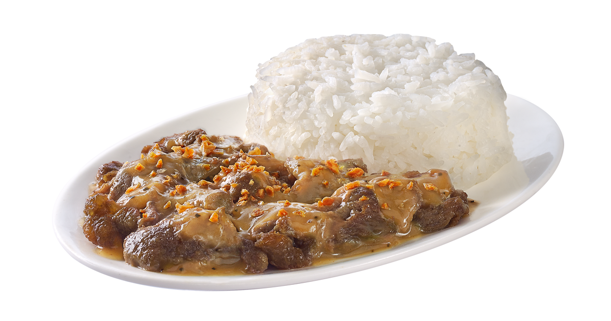
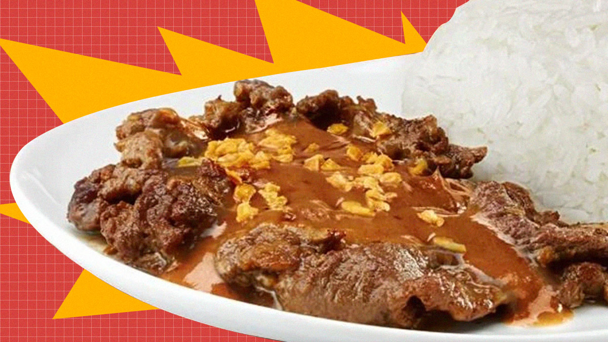

Garlic Pepper Steak

Buttery and filled with lots of savory flavors, Garlic Pepper Beef makes for a great lunch or dinner. And for a recipe that is not exactly Filipino in origin, it may shock you just how popular this is among our kababayans. A popular fast food chain is known for its adaptation of the delicious dish, and has made several comebacks to please customers.
Heres The Ingredients:
- Beef sirloin
- Garlic
- Knoor beef cube
- Butter
- Water
- Canola oil
Marinade Ingredients:
- Soy sauce
- Oyster sauce
- Ground black Pepper
- Garlic Powder
- Cornstarch

Here's How to Cook Garlic Pepper Steak:
- Step 1: Marinating the beef sirloin
- Step 2: Creating toasted garlic
- Step 3: Cooking up the beef
- Step 4: Making the sauce